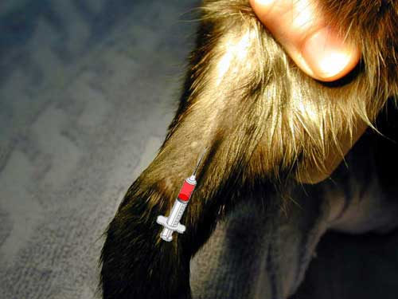
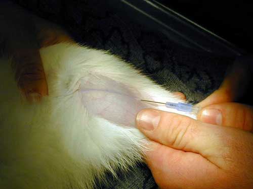
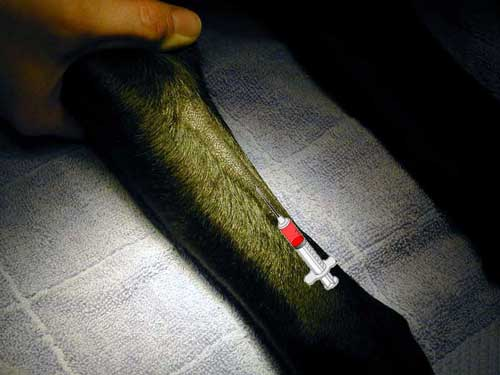
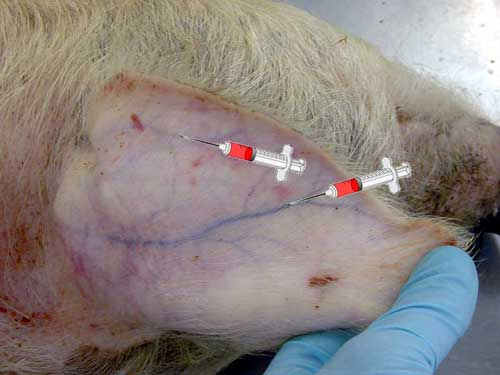
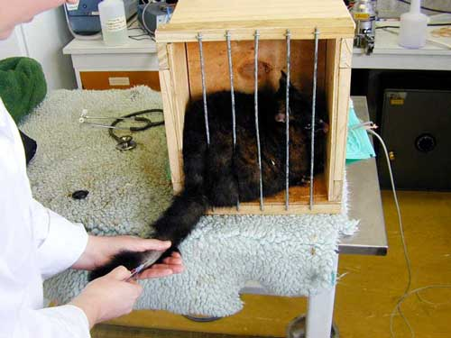
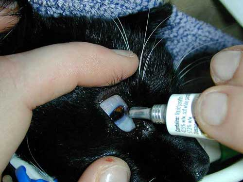
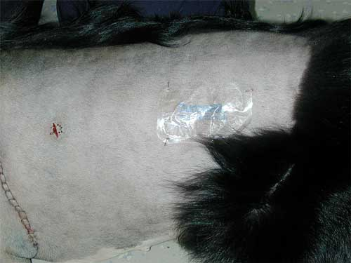
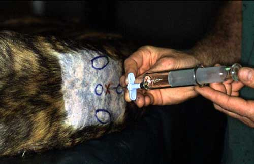

Injection into a dog's quadriceps muscle.

Cephalic vein in a cat's foreleg.
Placing a catheter in the medial saphenous vein in a cat's hind leg with the foot firmly held in the hand.
Cephalic vein in a dog's foreleg.
Veins suitable for injection in a pig's ear. The top of the pig's head is at the bottom.
Injection into the lateral tail vein of a possum.

An ointment being put in a cat's eye. Note that the eyelid is rolled back and the drug applied to the eyelid rather than the cornea, to avoid possible damage.
Transdermal patch containing fentanyl stuck to a dog's flank. The adhesive is designed for human skin and sometimes needs reinforcement such as staples to make sure that it does not fall off.
MRI of a dog's spine. The black blobs at the bottom of the spinal canal are venous sinuses.
Checking that the needle is in the epidural space using the loss of resistance technique. A Tuohy needle is being used - a catheter can be placed through this needle to allow top up doses.